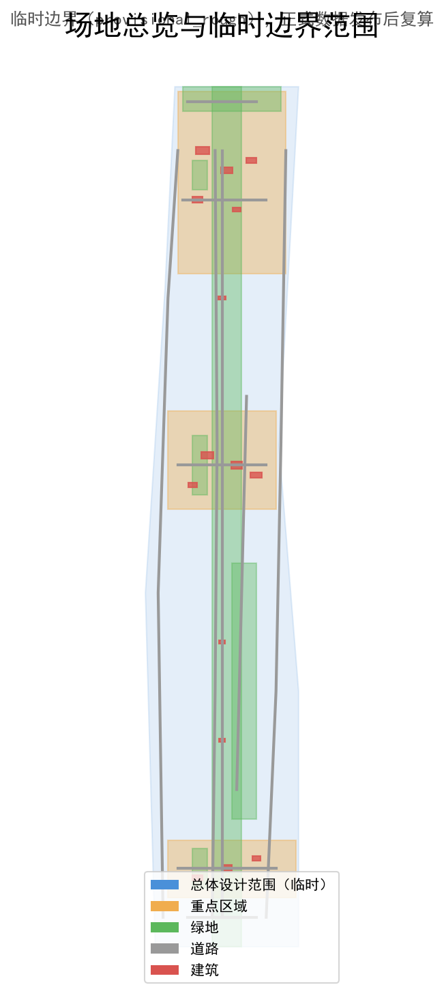
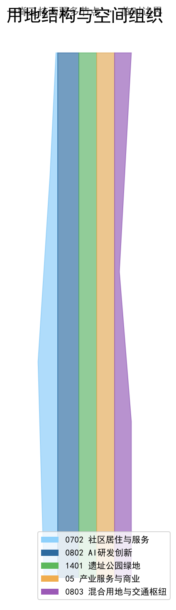
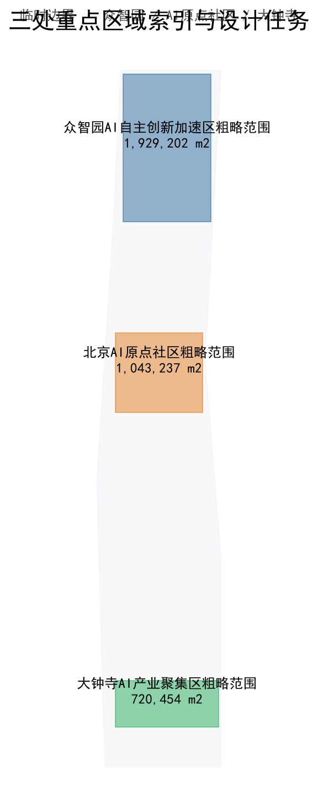
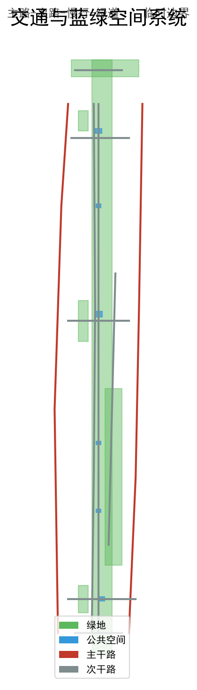
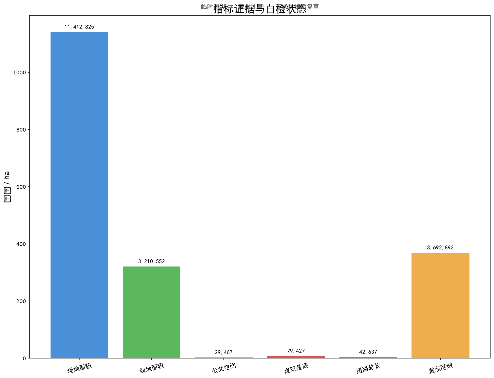

设计依据与资料清单
本方案以公告和任务书为依据，临时边界仅用于生成与自检。
三层范围工作框架
统筹研究范围43.6 km²、总体设计范围11.4 km²、重点区域368.4 ha。
统筹研究范围产业与未来城市研究
策源-加速-转化-体验-治理五环生态图谱；六个全球案例作为背景参照。
总体设计范围城市更新与控规深度城市设计
一脊三核两翼多节点；控规指标待官方数据。
重点区域详细设计
众智园、AI原点社区、大钟寺差异化功能。
AI 创新生态、人才画像与 AI+ 场景
12场景卡、6类用户画像（含弱势群体）、场景—空间—运营矩阵。
用地、建筑规模与拆改留方案
建筑基底79,427 m²，总规模估算254,165 m²。
交通、轨道、市政与公共服务设施
道路总长42,637 m，分布式算力与感知网络概念。
蓝绿空间、公共空间与城市风貌
绿地率28.13%，公共空间率0.2582%。
更新项目清单、实施政策与分期计划
南启动-中深化-北提升三期；四季四节活动；长期运营治理机制。
指标体系、面积复算与合规矩阵
核心指标可从几何复算；FAR/高度保持unknown。
风险、版权与合规说明
概念建议属性；COMMUNITY-DISPLAY-ONLY；不使用未授权资产。
参考资料
见sources.json。